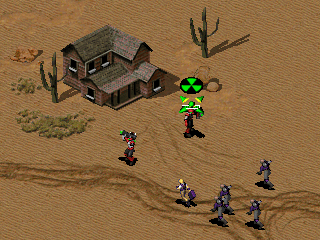
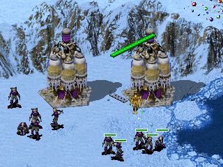

Cursors on Units and Structures¶
Cursors can be customized for each unit or structure to give them a unique appearance or to express the kind of special functionality better than the generic cursors can.
All of these settings take a named cursor defined under Mouse Cursors. Also see how to use custom weapon cursors.
Movement¶
These cursors are used for a variety of functions: setting the rally point for factories, undeploying structures, and giving units move orders, but they might also be used as fallback for other functions that can’t be used, for instance when a target can’t be attacked or an object cannot be entered.
[TechnoType]►Cursor.Move=(mouse cursor)- The cursor to use for representing the move action. Defaults to Move.
[TechnoType]►Cursor.NoMove=(mouse cursor)- The cursor to use for representing the no-move action. Defaults to NoMove.
Deploy¶
Deploy cursors are used for a variety of different functions like for deploying buildings, ejecting passengers and occupants, emptying bunkers, deploying GIs or Desolators, as well as for ordering area attacks like on the Yuri Clone.
[TechnoType]►Cursor.Deploy=(mouse cursor)- The cursor used for deploying actions. Defaults to Deploy.
[TechnoType]►Cursor.NoDeploy=(mouse cursor)- The cursor used to indicate a building cannot be deployed, passenger cannot be ejected, or an automatically undeploying infantry is currently deployed. Defaults to NoDeploy.
Enter¶
Unlike the other cursors, the enter cursor of the object the mouse is hovering
over is used. The enter cursor represents several different actions. For
instance, this is used for entering Tank Bunkers (Bunker=yes), Bio
Reactors (InfantryAbsorb=yes and/or UnitAbsorb=yes), Grinders
(Grinding=yes), Service Depots or aircraft docks (UnitRepair=yes),
or entering transports.
Note that certain actions cannot be customized using the following cursors. Despite the cursor is the enter cursor, entering occupiable structures is actually a capture action. Spy enter can be customized with the setting below. Also, the enter action for saboteurs and hijackers are represented with specialized cursors.
[TechnoType]►Cursor.Enter=(mouse cursor)- The enter cursor other objects get when hovering the mouse over an object of this type. Defaults to Enter.
[TechnoType]►Cursor.NoEnter=(mouse cursor)- The cursor other objects get when hovering the mouse over an object of this type while entering is not possible. This is used on full transports. Defaults to NoEnter.
Spy Infiltration¶
The spy cursor can be customized for each building type, so Agent=yes
infantry can get a cursor that might be tailored to the spy effect of that
building type when infiltrating.
[BuildingType]►Cursor.Spy=(mouse cursor)- The cursor to show for a spy infiltrating a building of this type. Defaults to Enter.